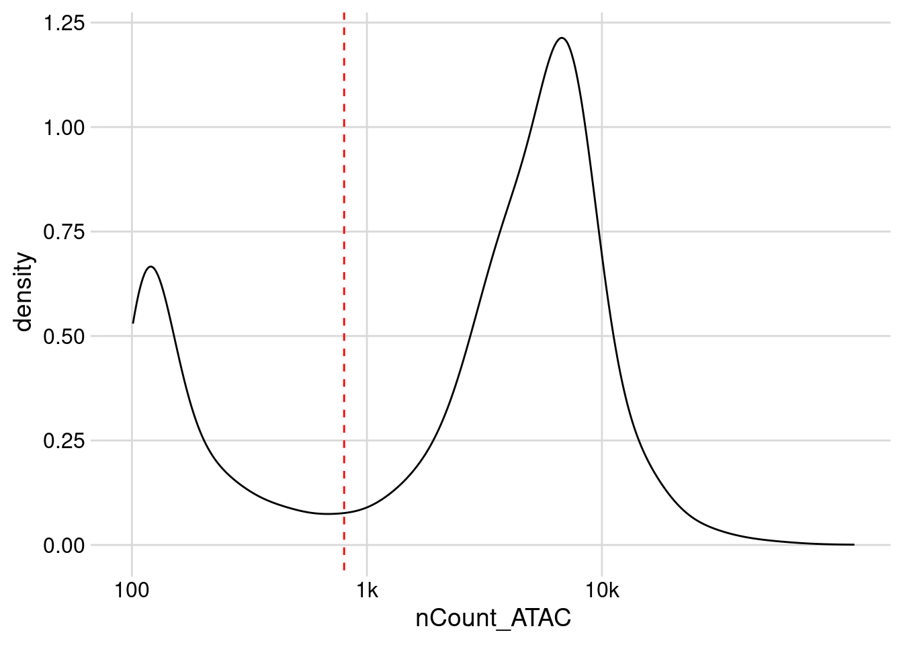
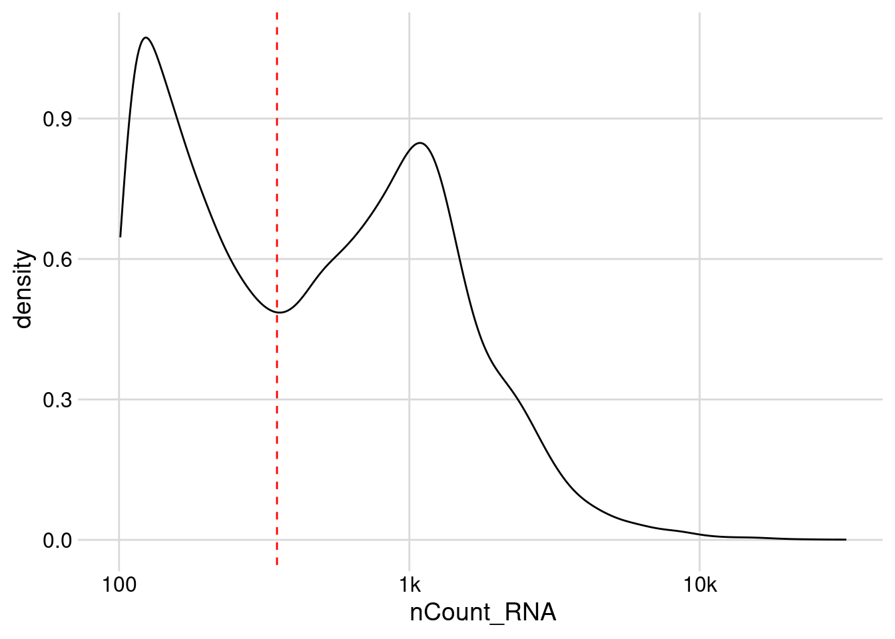
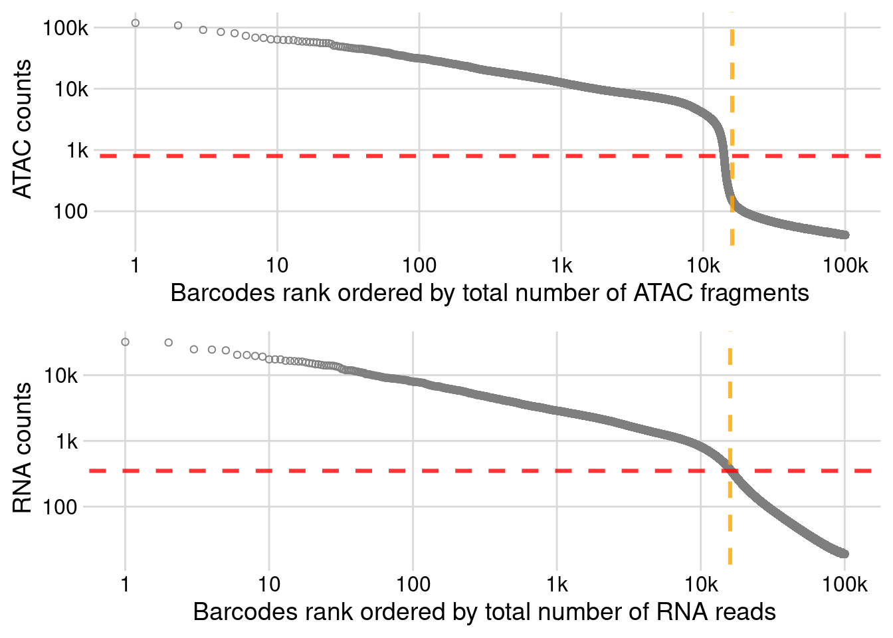
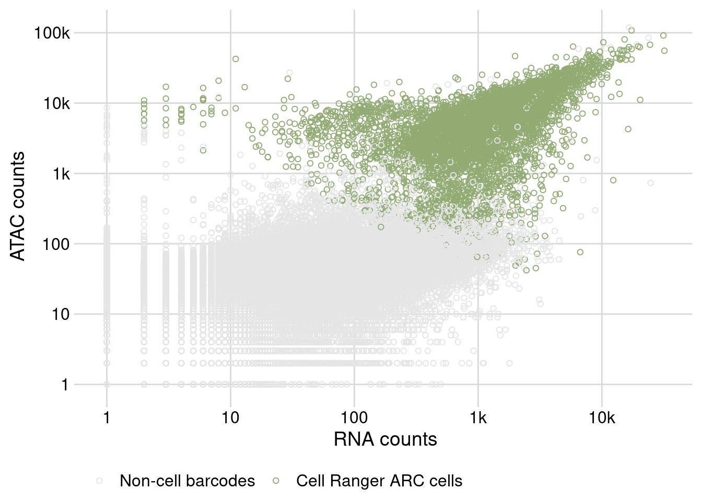
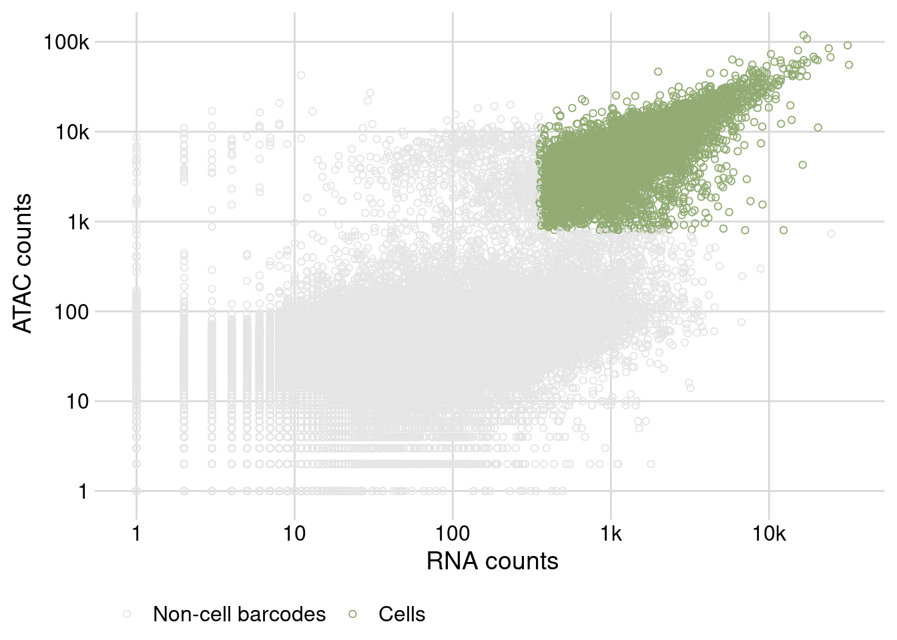

4 Seurat
4.1 Create seurat object
# ------------------------------------------------------------------------------
# Load data and set up Seurat object
# May 11, 2023
# TS O'Leary
# ------------------------------------------------------------------------------
# Description
# Load in the RNA-Seq count data and the ATAC-Seq peak fragment data and save as
# an rds file to be used for quality control and filtering.
# Load libraries
library(tidyverse)
library(Seurat)
library(Signac)
library(AnnotationHub)
# Load the RNA-Seq and ATAC-Seq data -------------------------------------------
data_dir <- here::here("data/processed/seq/all/outs/")
raw_feature_dir <- paste0(data_dir, "raw_feature_bc_matrix")
frag_path <- paste0(data_dir, "atac_fragments.tsv.gz")
counts <- Read10X(raw_feature_dir)
# Get gene annotations for dm6 -------------------------------------------------
BDGP6.32 <- query(
AnnotationHub(),
c("EnsDb", "Drosophila melanogaster", "109")
)
annotation <- GetGRangesFromEnsDb(BDGP6.32[[1]])
seqlevelsStyle(annotation) <- "UCSC"
# Meta data --------------------------------------------------------------------
# Create meta data for all cells based on the GEM well suffix. From 10X Genomics
# "This number, which indicates which GEM well the barcode sequence came from,
# is called the GEM well suffix. The numbering of the GEM wells will reflect the
# order that the GEM wells were provided in the Aggregation CSV."
meta_data <- tibble(cellnames = colnames(counts[[1]])) %>%
mutate(orig.ident = str_extract(cellnames, "[1-4]")) %>%
full_join(tibble::tribble(
~orig.ident, ~sample_name, ~acc_temp,
"1", "18C_Rep1", "18C",
"2", "18C_Rep2", "18C",
"3", "25C_Rep1", "25C",
"4", "25C_Rep2", "25C"
),
by = "orig.ident") %>%
column_to_rownames("cellnames")
# Create a Seurat object containing the RNA data
dat <- CreateSeuratObject(
project = "heater",
counts = counts$`Gene Expression`,
assay = "RNA",
names.delim = "-",
meta.data = meta_data
)
# Create ATAC assay and add it to the object
dat[["ATAC"]] <- CreateChromatinAssay(
counts = counts$Peaks,
sep = c(":", "-"),
fragments = frag_path,
annotation = annotation,
# Validate fragments arg makes sure all cells can be found in the frags file
# However, there may be cells/barcodes that are present in the assay, but are
# not represented in the fragment file. For example, RNA-seq reads that are
# from GEM barcodes that have no fragments associated with them. Check with
# Seth about this.
validate.fragments = FALSE
)
# Save raw Seurat object
saveRDS(dat, here::here("data/processed/seurat_object/01_dat_raw.rds"))Creating a Seurat object directly from the Cell Ranger ARC filtered output.
# ------------------------------------------------------------------------------
# Load data and set up Seurat object from Cell Ranger ARC filtered matrix
# May 11, 2023
# TS O'Leary
# ------------------------------------------------------------------------------
# Description
# Load in the RNA-Seq count data and the ATAC-Seq peak fragment data and save as
# an rds file to be used for quality control and filtering.
# Load libraries
library(tidyverse)
library(Seurat)
library(Signac)
library(AnnotationHub)
# Load the RNA-Seq and ATAC-Seq data -------------------------------------------
data_dir <- here::here("data/processed/seq/all/outs/")
filtered_feature_dir <- paste0(data_dir, "filtered_feature_bc_matrix")
frag_path <- paste0(data_dir, "atac_fragments.tsv.gz")
counts <- Read10X(filtered_feature_dir)
# Get gene annotations for dm6 -------------------------------------------------
BDGP6.32 <- query(
AnnotationHub(),
c("EnsDb", "Drosophila melanogaster", "109")
)
annotation <- GetGRangesFromEnsDb(BDGP6.32[[1]])
seqlevelsStyle(annotation) <- "UCSC"
# Meta data --------------------------------------------------------------------
# Create meta data for all cells based on the GEM well suffix. From 10X Genomics
# "This number, which indicates which GEM well the barcode sequence came from,
# is called the GEM well suffix. The numbering of the GEM wells will reflect the
# order that the GEM wells were provided in the Aggregation CSV."
meta_data <- tibble(cellnames = colnames(counts[[1]])) %>%
mutate(orig.ident = str_extract(cellnames, "[1-4]")) %>%
full_join(tibble::tribble(
~orig.ident, ~sample_name, ~acc_temp,
"1", "18C_Rep1", "18C",
"2", "18C_Rep2", "18C",
"3", "25C_Rep1", "25C",
"4", "25C_Rep2", "25C"
),
by = "orig.ident") %>%
column_to_rownames("cellnames")
# Create a Seurat object containing the RNA data
dat <- CreateSeuratObject(
project = "heater",
counts = counts$`Gene Expression`,
assay = "RNA",
names.delim = "-",
meta.data = meta_data
)
# Create ATAC assay and add it to the object
dat[["ATAC"]] <- CreateChromatinAssay(
counts = counts$Peaks,
sep = c(":", "-"),
fragments = frag_path,
annotation = annotation
)
# Save raw Seurat object
saveRDS(dat, here::here("data/processed/seurat_object/01_dat_filtered.rds"))4.2 Quality control and filtering
# ------------------------------------------------------------------------------
# Quality control and filtering of low-quality cells
# March 27, 2023
# TS O'Leary
# ------------------------------------------------------------------------------
# Description -----
# Basic quality control metrics and filtering out non-cell barcodes.
# Load libraries
library(tidyverse)## ── Attaching core tidyverse packages ──────────────────────── tidyverse 2.0.0 ──
## ✔ dplyr 1.1.1 ✔ readr 2.1.4
## ✔ forcats 1.0.0 ✔ stringr 1.5.0
## ✔ ggplot2 3.4.2 ✔ tibble 3.2.1
## ✔ lubridate 1.9.2 ✔ tidyr 1.3.0
## ✔ purrr 1.0.1
## ── Conflicts ────────────────────────────────────────── tidyverse_conflicts() ──
## ✖ dplyr::filter() masks stats::filter()
## ✖ dplyr::lag() masks stats::lag()
## ℹ Use the conflicted package (<http://conflicted.r-lib.org/>) to force all conflicts to become errorslibrary(Seurat)## Attaching SeuratObjectlibrary(Signac)
# Load data
dat <- readRDS(here::here("data/processed/seurat_object/01_dat_raw.rds"))
# Load 10X filtered data
dat_10x <- readRDS(
here::here("data/processed/seurat_object/01_dat_filtered.rds")
)
# Total number of barcodes in the data set
length(Cells(dat))## [1] 2215183# Define count cutoffs
low_ATAC <- 800
low_RNA <- 350
# Visualize count cutoffs ----
# Density distribution of ATAC Reads
dat@meta.data %>%
filter(nCount_ATAC > 100) %>%
ggplot() +
geom_density(aes(x = nCount_ATAC)) +
geom_vline(aes(xintercept = low_ATAC),
color = "red",
linetype = 2) +
scale_x_continuous(trans = "log10",
breaks = c(1, 10, 100, 1000, 10000),
labels = c("1", "10", "100", "1k", "10k")) +
cowplot::theme_minimal_grid()
# Density distribution of RNA Reads
dat@meta.data %>%
filter(nCount_RNA > 100) %>%
ggplot() +
geom_density(aes(x = nCount_RNA)) +
geom_vline(aes(xintercept = low_RNA),
color = "red",
linetype = 2) +
scale_x_continuous(trans = "log10",
breaks = c(1, 10, 100, 1000, 10000),
labels = c("1", "10", "100", "1k", "10k")) +
cowplot::theme_minimal_grid()
# Knee-plot for ATAC -----------------------------------------------------------
# Create ranked data.frame
knee_atac_df <- tibble(
nCount_ATAC = sort(dat$nCount_ATAC,
decreasing = TRUE)
) %>%
rownames_to_column("rank") %>%
mutate(rank = as.numeric(rank)) %>%
head(100000)
# Plot the knee_plot
p1 <- knee_atac_df %>%
ggplot() +
geom_point(aes(x = rank,
y = nCount_ATAC),
color = "grey50",
shape = 21) +
geom_vline(aes(xintercept = 16000),
linetype = 2,
color = "orange",
alpha = 0.8,
linewidth = 1.1) +
geom_hline(aes(yintercept = low_ATAC),
linetype = 2,
color = "red",
alpha = 0.8,
linewidth = 1.1) +
scale_y_continuous(trans = "log10",
breaks = c(100, 1000, 10000, 100000),
labels = c("100", "1k", "10k", "100k"),
name = "ATAC counts") +
scale_x_continuous(trans = "log10",
breaks = c(1, 10, 100, 1000, 10000, 100000),
labels = c("1", "10", "100", "1k", "10k", "100k"),
name = "Barcodes rank ordered by total number of ATAC fragments") +
cowplot::theme_minimal_grid()
# Knee-plot for RNA ------------------------------------------------------------
# Create ranked data.frame
knee_rna_df <- tibble(
nCount_RNA = sort(dat$nCount_RNA,
decreasing = TRUE)
) %>%
rownames_to_column("rank") %>%
mutate(rank = as.numeric(rank)) %>%
head(100000)
# Plot the knee_plot
p2 <- knee_rna_df %>%
ggplot() +
geom_point(aes(x = rank,
y = nCount_RNA),
color = "grey50",
shape = 21) +
geom_vline(aes(xintercept = 16000),
linetype = 2,
color = "orange",
alpha = 0.8,
linewidth = 1.1) +
geom_hline(aes(yintercept = low_RNA),
linetype = 2,
color = "red",
alpha = 0.8,
linewidth = 1.1) +
scale_y_continuous(trans = "log10",
breaks = c(100, 1000, 10000, 100000),
labels = c("100", "1k", "10k", "100k"),
name = "RNA counts") +
scale_x_continuous(trans = "log10",
breaks = c(1, 10, 100, 1000, 10000, 100000),
labels = c("1", "10", "100", "1k", "10k", "100k"),
name = "Barcodes rank ordered by total number of RNA reads") +
cowplot::theme_minimal_grid()
# Knee plots together
cowplot::plot_grid(p1, p2,
nrow = 2)
# Save knee plot
ggsave(here::here("output/figs/qc/knee_plots.pdf"),
height = 6,
width = 6)
# Scatter plot of ATAC & RNA counts --------------------------------------------
# Cells called by Cell Ranger ARC
dat@meta.data %>%
filter(nCount_RNA >= 1 &
nCount_ATAC >= 1) %>%
rownames_to_column("cells") %>%
mutate(cells_10x = ifelse(cells %in% Cells(dat_10x),
"Cell Ranger ARC cells",
"Non-cell barcodes")) %>%
mutate(cells_10x = factor(cells_10x,
levels = c("Non-cell barcodes",
"Cell Ranger ARC cells"))) %>%
ggplot(aes(x = nCount_RNA,
y = nCount_ATAC)) +
geom_point(aes(color = cells_10x),
shape = 21) +
scale_x_continuous(trans = "log10",
breaks = c(1, 10, 100, 1000, 10000, 100000),
labels = c("1", "10", "100", "1k", "10k", "100k"),
name = "RNA counts") +
scale_y_continuous(trans = "log10",
breaks = c(1, 10, 100, 1000, 10000, 100000),
labels = c("1", "10", "100", "1k", "10k", "100k"),
name = "ATAC counts") +
scale_color_manual(values = c("grey90", "#91AB73"),
name = element_blank()) +
cowplot::theme_minimal_grid() +
theme(legend.position = "bottom")
# Save scatter plot
ggsave(here::here("output/figs/qc/scatter_rna_atac_10x_cells.pdf"),
height = 6,
width = 6)
# Cells called based on count cutoffs only
dat@meta.data %>%
filter(nCount_RNA >= 1 &
nCount_ATAC >= 1) %>%
mutate(cells = ifelse(nCount_RNA > low_RNA &
nCount_ATAC > low_ATAC,
"Cells",
"Non-cell barcodes")) %>%
mutate(cells = factor(cells,
levels = c("Non-cell barcodes",
"Cells"))) %>%
ggplot(aes(x = nCount_RNA,
y = nCount_ATAC)) +
geom_point(aes(color = cells),
shape = 21) +
scale_x_continuous(trans = "log10",
breaks = c(1, 10, 100, 1000, 10000, 100000),
labels = c("1", "10", "100", "1k", "10k", "100k"),
name = "RNA counts") +
scale_y_continuous(trans = "log10",
breaks = c(1, 10, 100, 1000, 10000, 100000),
labels = c("1", "10", "100", "1k", "10k", "100k"),
name = "ATAC counts") +
scale_color_manual(values = c("grey90", "#91AB73"),
name = element_blank()) +
cowplot::theme_minimal_grid() +
theme(legend.position = "bottom")
# Save scatter plot
ggsave(here::here("output/figs/qc/scatter_rna_atac_low_density_cutoff.pdf"),
height = 6,
width = 6)
# Filter out low quality cells and non-cell barcodes ---------------------------
# Filter criteria just based on low count threshold
dat <- dat %>%
subset(nCount_ATAC > low_ATAC &
nCount_ATAC > low_RNA)
# Total number of nuclei
dat@meta.data %>%
tally()## n
## 1 14022# Number of nuclei at each acclimation temperature
dat@meta.data %>%
group_by(acc_temp) %>%
tally()## # A tibble: 2 × 2
## acc_temp n
## <chr> <int>
## 1 18C 7117
## 2 25C 6905# Number of nuclei in each sample
dat@meta.data %>%
group_by(sample_name) %>%
tally()## # A tibble: 4 × 2
## sample_name n
## <chr> <int>
## 1 18C_Rep1 1981
## 2 18C_Rep2 5136
## 3 25C_Rep1 3277
## 4 25C_Rep2 3628# DecontX to account for ambient RNAs ------------------------------------------
# # Convert RNA counts to a single cell experiment object
# counts <- GetAssayData(object = dat, slot = "counts")
# sce <- SingleCellExperiment::SingleCellExperiment(list(counts = counts))
#
# # Run decontX on the RNA counts
# sce <- celda::decontX(sce)
#
# # Create a new assay object with dexcontX fixed counts
# # Optionally write over the old counts ---??
# dat[["decontX_counts"]] <- CreateAssayObject(
# counts = celda::decontXcounts(sce)
# )
#
# # Save data
# saveRDS(dat, "data/processed/seurat_object/02_dat_cells.rds")
#
# ### SCRATCH
# # Calculate Nucleosome Signal and TSS Enrichment for ATAC QC metrics
# # DefaultAssay(dat) <- "ATAC"
# # dat <- NucleosomeSignal(dat)
# # dat <- TSSEnrichment(dat) # Doesn't work?
#
# # Create simple Violin Plot with cell meta.data information before filtering
# # VlnPlot(
# # object = dat,
# # features = c("nCount_RNA",
# # "nCount_ATAC",
# # "TSS.enrichment",
# # "nucleosome_signal"),
# # ncol = 4,
# # pt.size = 0
# # )
#
# # VlnPlot(
# # object = dat,
# # features = c("nCount_RNA",
# # "nCount_ATAC"),
# # ncol = 4,
# # pt.size = 0
# # )